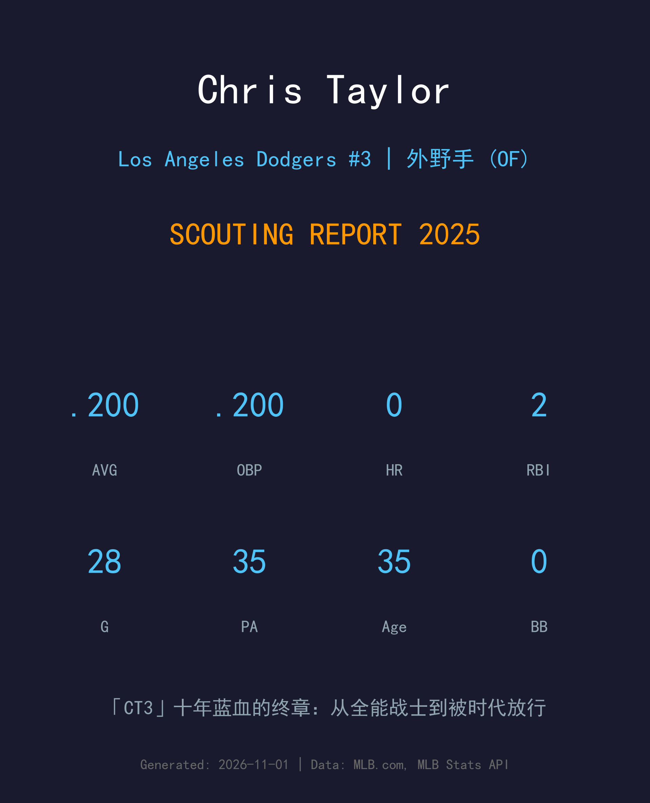
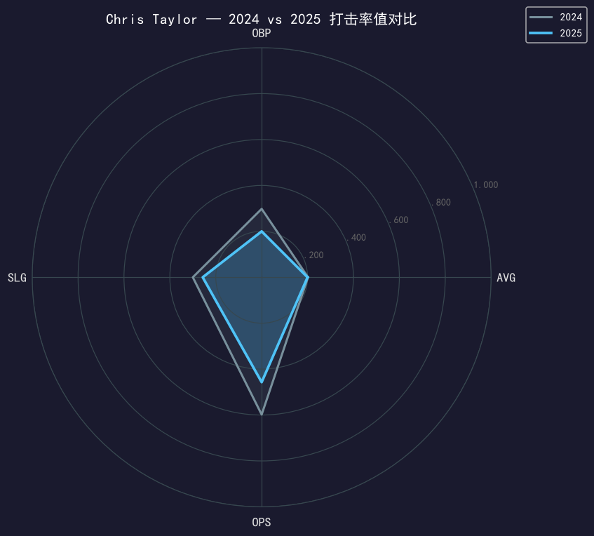
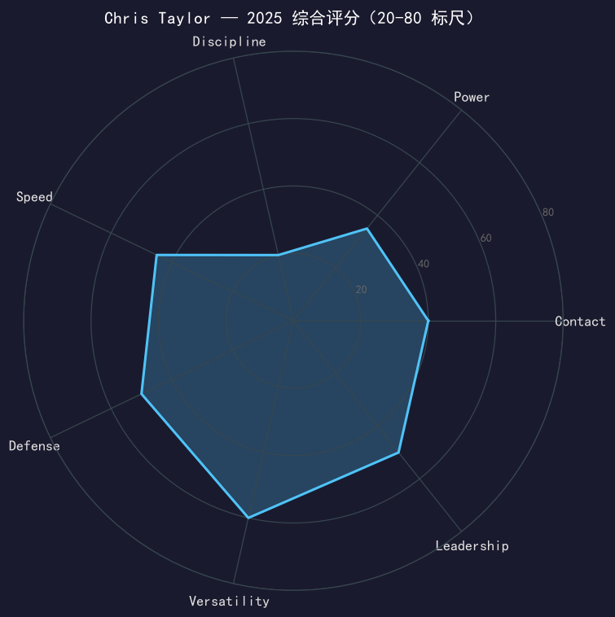

Los Angeles Dodgers #3 | 外野手 | 右打 | 「CT3」十年蓝血的终章

⚠️ 小样本警告：本报告基于道奇告别段的 28 场 / 35 个打席。
Chris Taylor 的 2025 年道奇段写在两行交易记录里：28 场出赛、35 个打席、0 次保送、.200/.200/.257——然后 5 月 18 日，道奇宣布释出这位效力十年的「CT3」。没有告别仪式的新闻稿，没有主场致敬日，一个时代的句号就这么落在了 waiver 线的文件堆里。他穿过公路加盟天使，在安纳罕又打了 30 场（.179、2 轰）。
数字很冷，但数字也说出了真相：当一位以选球纪律见长的老将（生涯年均保送率约 9%）在 35 个打席里保送了零次、三振 13 次时，说明他的眼睛和挥棒已经追不上大联盟的球了。道奇的放手不是无情，而是精确——争冠球队的名单位置，从来只奖励当下的产出。
从 2025 年 11 月的视角看，35 岁的 Taylor 站在职业生涯的终点站前：水手三年、道奇十年、天使四十场。1,007 场道奇出赛、108 轰、两座世界大赛冠军（2020、2024）和 2021 年 NLCS 第 5 场的单场三轰——这份履历足以让 3 号球衣在球迷记忆里退役十次。
道奇生涯的巅峰年：140 场 .288/.354/.496（OPS .850）、85 分、17 盗、21 轰 72 打点——全能战士的教科书定义，也是「CT3」这个绰号响彻道奇体育场的起点。
国联冠军赛第 5 场对亚特兰大单场轰出 3 支全垒打——道奇队史季后赛最疯狂的单场表演之一。那一年他整季 20 轰 73 打点，是进攻端的隐形支柱。
以 utility 身份随道奇两夺世界大赛冠军（2020、2024）——十年间他守过游击、二垒、三垒和全部三个外野位置，是冠军拼图上最百搭的那一块。

| 赛季 | 队 | G | PA | AVG | OBP | SLG | OPS | HR | RBI | BB | SO | SB |
|---|---|---|---|---|---|---|---|---|---|---|---|---|
| 2024 | LAD | 87 | 246 | .202 | .298 | .300 | .598 | 4 | 23 | 28 | 76 | 5 |
| 2025 | LAD | 28 | 35 | .200 | .200 | .257 | .457 | 0 | 2 | 0 | 13 | 0 |
| 2025 | LAA | 30 | 90 | .179 | .278 | .321 | .599 | 2 | 10 | 5 | 29 | 2 |
两年的下滑曲线一目了然：OBP 从 .298（2024）跌到 .200（道奇段）——而 .200 恰好等于 AVG，意味着他在道奇的最后 35 个打席里没有制造出任何一次「非安打上垒」。对 Taylor 这种依赖选球积累价值的打者来说，保送归零比打击率下滑更致命：当他的眼睛先老，挥棒的老化就只是时间问题。天使段的 5 次保送说明他尝试过调整，但 .179 的答复同样残酷。
Taylor 的式微不止是个人老化，更是 roster 经济学演变的注脚：2017-2021 年间，一支球队愿意为「能守六个位置、OPS .750 的万金油」支付 500+ 打席；到了 2025 年，规则限制投手使用次数后，各队更需要「专职 platoon」而非「全能替补」，打席被切得更碎，对 utility 的要求从「广」变成了「专」。Taylor 那套「哪里缺人补哪里」的技能包，在新环境里两头不讨好——这是他被 5 月放行的结构性原因。
评价 Taylor 不能只看 2025。从 2016 年 6 月被水手交易到洛杉矶，到 2025 年 5 月离开，他累计为道奇出赛 1,007 场、轰出 108 支全垒打、贡献两座世界大赛冠军。在道奇队史 utility 的坐标系里，他是把「替补」这个词打成「隐形主力」的人——2017-2021 五个赛季里他有四个赛季 WAR 排在队内前五。这样的球员不常有，下一个也未必再有。
被释后十天，天使给了他一份合约——同城、熟悉的美西、没有太多战绩压力的环境。30 场 2 轰 10 打点的表现算是体面的谢幕巡演：安纳罕的看台不大，但掌声真诚。从 11 月的视角看，他的下一步只有两种可能：一份带教练职位的告别合约，或者直接在 35 岁退役。无论哪种，CT3 都已经写完了属于他的章节。

从全能战士到体面谢幕：utility 时代的最后一位巨星
C+ 级 / 生涯谢幕巡演
道奇 2025 季后赛夺冠之路：外卡 2-0 红人 → NLDS 3-1 费城人 → NLCS 4-0 酿酒人 → 世界大赛 4-3 多伦多蓝鸟。
Taylor 没有参与道奇的 2025 冠军之路——5 月 18 日的释出决定早已把他推向了公路另一头的安纳罕。而命运最具反讽的一笔在这里：道奇世界大赛击败的最后一个对手，是他职业生涯开始的地方西雅图水手所在的联盟对手圈；而他十年道奇生涯的最后一枚戒指，将停留在 2024。冠军游行那天，CT3 只能在天使球场的休息室电视里看着昔日的队友举杯——那杯香槟的味道，他比谁都熟。
Taylor 的 2026 年大概率只剩两种形态：以「球员兼顾问」合约回到某支熟悉的球队打完最后 30 场，或者直接进入教练组。他的 baseball IQ 和六位置经验是天然的 bench coach 材料，道奇体系里给他留一个位置只是时间问题——洛杉矶的球迷不会接受 CT3 穿上别队的教练服。
理想剧本：回道奇挂靴，进入 Dave Roberts 的教练组
现实基准：一年 300 万美元级别的老将合约，打完第 12 季
下行可能：无约退役——但即便如此，遗产已无需证明
Chris Taylor 来自弗吉尼亚海滩，2014 年在水手登上大联盟，当时的标签是「守备稳健的游击新秀」。2016 年 6 月，道奇用一个不起眼的交易把他带到了洛杉矶——这笔交易后来被反复称为队史最超值的抢劫之一：他们用一名小联盟投手，换回了未来十年的万金油。
2017 年是他人生中最热的一个夏天：.288、21 轰、85 分、17 盗，从替补直接打成了全明星级别的工具人。「CT3」的绰号来自他的名字缩写和背号 3 号——从那年起，道奇球迷习惯了在任何一个位置看到他的身影。2021 年 NLCS 第 5 场的单场三轰，是他职业生涯的最高光：那一天，整个洛杉矶都在喊同一个名字。
2025 年 11 月的 Chris Taylor 刚在天使打完职业生涯的倒数第 30 场球。十年道奇、1,007 场出赛、108 轰、两枚戒指——如果这是终章，它配得上一个安静的谢幕：没有漫天纸屑，只有懂球的掌声。Utility 球员的故事从来不上头条，但冠军队伍的历史书里，每一页都有他们的位置。